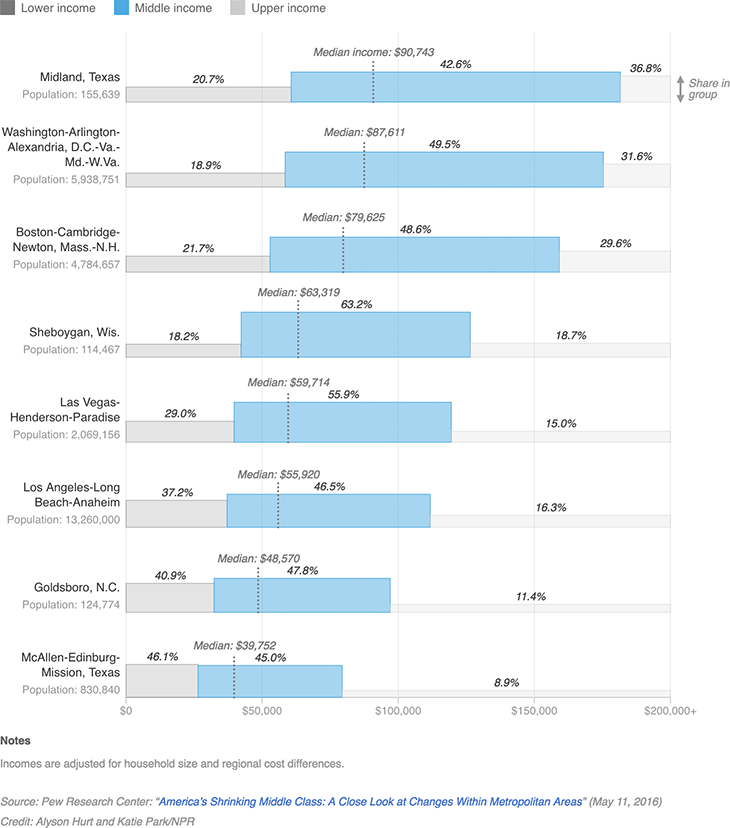

The Shape Of The Middle Class Varies By Metro Area
In Sheboygan, Wis., 63 percent of the population falls into the middle class — one of the largest middle-income groups in the country (by share of the population). Meanwhile, the middle-income group in Midland, Texas, is one of the country’s smallest, at 43 percent of the population. However, because of an energy boom, that area’s upper-class bracket grew by 19 percentage points between 2000 and 2014, to 37 percent of the metro area’s population (one of the largest upper-income brackets in the country). Below, a selection of U.S. metro areas and the 2014 median household income in each. The colored boxes each represent an income group, sized by the share of the population that falls into each group.
